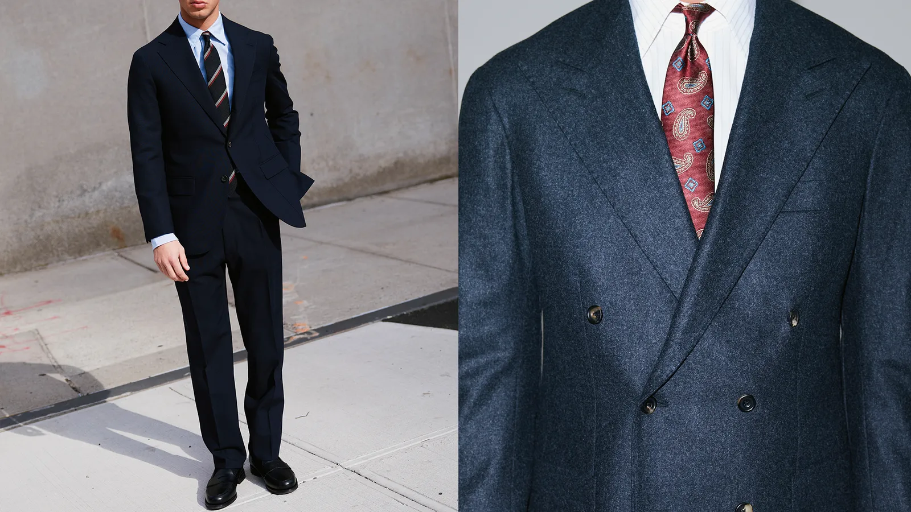
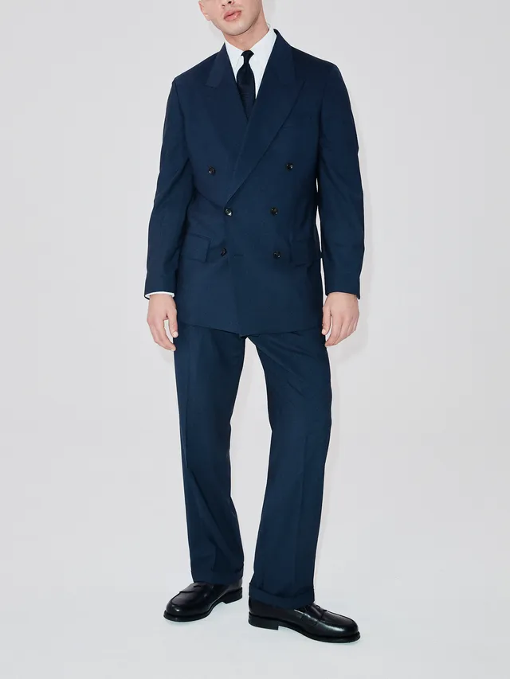
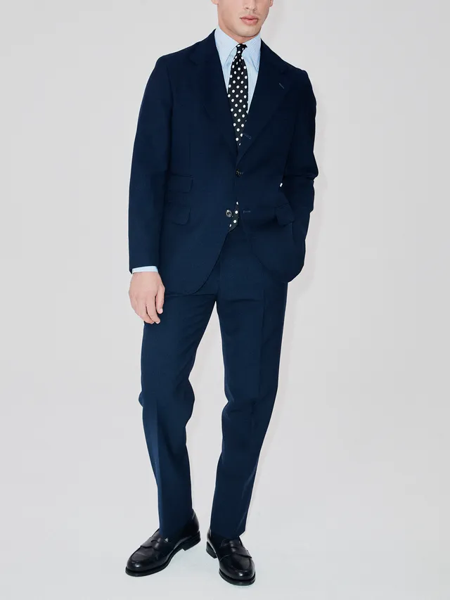

Trends ebb and flow, but a terrific suit will stay in your closet forever.
These ever-reliable standbys—and brash of-the-moment swerves—
are proof of
tailoring's enduring relevance in the new year.
J.Crew has long been a reliable source for suiting that’s both decent-quality and budget-friendly,
(especially if you catch it on sale). It easily upholds that reputation with this all-rounder. From
its debut in 2008 until recently, the brand’s slim-cut Ludlow suit was the reigning champ of its
tailoring lineup, but as the fitted silhouettes of the #menswear era give way to a more generous cut,
the Kenmare, J.Crew’s most relaxed silhouette, is ready to step in.

The eponymous designer behind this NYC-based brand has spent the last 15 years creating a head-to-toe
wardrobe, from turtlenecks and jeans to sport coats and suits, that looks good on pretty much everyone.
As such, you can put your trust in Snyder’s new Wythe silhouette, with its peak lapel double-breasted jacket,
double-pleated trousers, and ever-so-slightly stretchy Italian wool cloth, to be as universally flattering as
anything else with the designer’s name on it.
“Tailoring ebbs and flows. If you think about what was going on 20 years ago, it was all about the shrunken
suit,” Snyder told GQ. “But now you're seeing this new reinvention, which harkens back to the ‘80s and ‘90s,
with wider legs, not quite as fitted, and not shrunken at all.”
If you’re considering adding a double-breasted suit to your rotation, start with this one.

This London-based atelier specializes in suits that don’t take themselves too seriously, but are nonetheless
made with a fanatical attention to detail. “It really started with practicality,” says Drake’s creative director,
Michael Hill, of the development of this unlined, half-canvassed jacket and matching single-pleat trousers.
“I’ve always been interested in tailoring designed for warmer climates, naval uniforms, and travel suits, where
function and comfort were the starting point, and appearance followed naturally.”
To wit, this suit has a soft shoulder and an easy drape for maximum comfort, plus lightness, breathability,
and all-day wrinkle-resistance thanks to the natural springiness of its Italian high-twist merino cloth.
“It’s about balance, proportion, and getting the fundamentals right,” says Hill.
“In many ways, it reflects how we think about tailoring at Drake’s more broadly, rooted in tradition but
always designed for real life.”
email Jeremy@fashionblog.com | phone (555) 123-4567 | address 123 Fashion Street, New York, NY 10001